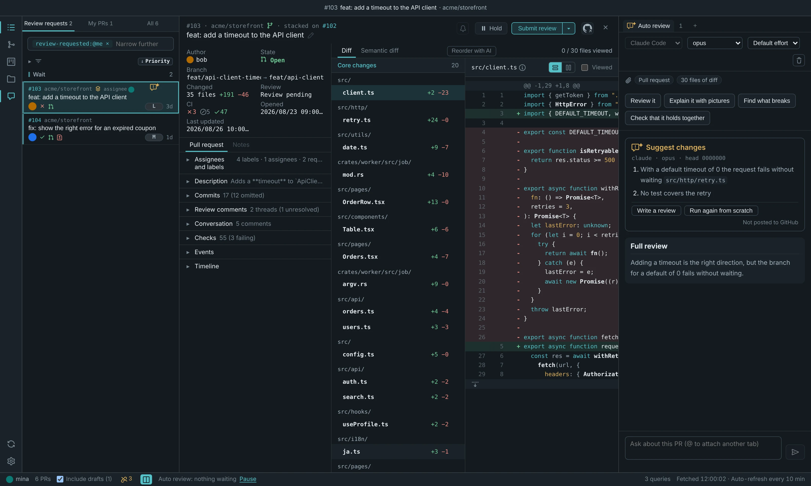

Review pull requests with the groundwork laid out.
Lythe is a Mac app for reviewing GitHub pull requests. It tells you which PR to read next and groups the diff by what changed. If you have Claude Code, Codex or GitHub Copilot CLI installed, it can have that CLI review the PR for you. Lythe has no AI of its own and needs no API key.
Apple Silicon Macs only (not Intel). Needs GitHub CLI, signed in.
curl -fsSL https://slashkiko.github.io/lythe-releases/install.sh | sh
Try it here
This is the real Lythe UI running on made-up sample pull requests. Pick a feature, then click around. AI answers here are prepared in advance.
What to read next
PRs you wrote, are assigned, or are asked to review, from every repository, in one list ordered by who needs to act.
- Open the All tab. PRs are grouped into Read (your review is wanted), Act (your move), Wait (on someone else) and Watch (nothing needed).
- Click a PR to open it on the right.
- Switch to Review requests to see only the PRs you were asked to review.
Stacks as a graph
PRs opened on top of other PRs' branches (a stack) show as one graph, so you can see what sits under the one you are about to read.
- Click #102. Its stack lights up and the other PRs fade.
- Untick Related only to bring the others back.
- Hover a PR to see why it got its priority.
Semantic diff
The diff grouped by function and type. Moved code shows as a move, with only the lines that really changed. It parses the code instead of using AI. Covers TypeScript, Rust, Go, CSS and config files (JSON, YAML, TOML); other files stay a normal diff.
- On the right, find withRetry: it moved to another file, and only the 2 lines that differ are colored.
- Click Orders on the left to jump to that group.
- Switch to Diff above to compare with the plain diff.
Reorder with AI
An AI CLI splits a large PR into chunks by behavior, and Lythe shows the diff in that order with a short note on each chunk.
- Press Reorder with AI. The files are split into chunks in reading order.
- Click ⓘ next to a chunk to read what it changes and why.
- Press Undo to see the order before.
Here a prepared answer comes back. In the app, the AI CLI you installed does the work.
Auto review
Turn it on in Settings, and while Lythe is open your AI CLI reviews the PRs you're asked to review, highest priority first, and again after each push. Results stay inside Lythe. Nothing is posted to GitHub.
- The Auto review tab holds the result: a verdict and its reasons.
- Scroll down for the full review.
- Nothing was posted to GitHub. You decide what to send.
This review was written in advance. In the app, your AI CLI writes it.
A second opinion
Ask one AI CLI, then hand its answer to another to check. Each conversation has its own tab on the same PR.
- The tabs at the top are separate conversations, each with its own AI CLI.
- The third tab is open: Codex checks an answer Claude Code gave in the second tab.
- Type a question and press ⌘Enter.
Here a prepared answer comes back. In the app, the CLI you picked reads the PR and answers.

Install
About five minutes.
- 1
Install Lythe
Paste this into Terminal. It puts Lythe.app in /Applications.
curl -fsSL https://slashkiko.github.io/lythe-releases/install.sh | shInstalled from the .dmg instead? Lythe is not signed by Apple, so run this once before the first launch:
xattr -dr com.apple.quarantine /Applications/Lythe.app - 2
Sign in to GitHub CLI
Lythe works with GitHub through your gh login (reading PRs and sending the reviews you submit) and asks gh for the token each time. It never saves the token.
brew install ghNo Homebrew? See cli.github.com for other installers.
gh auth login - 3
Open Lythe
PRs you wrote, are assigned, or are asked to review show up, from every repository. To add more repositories or searches, open Settings (⌘ ,) › Repositories and searches.
- 4
Add an AI CLI (optional)
Chat, Reorder with AI and Auto review (off until you turn it on) use a CLI on your Mac: Claude Code, Codex or GitHub Copilot CLI. Install one and sign in. Lythe runs it with its own settings and account, so its usage counts toward that plan. There is no API key to enter in Lythe.
Lythe does not update itself. To update, choose Lythe › Check for Updates… in the menu bar.
If something goes wrong
- “Lythe” is damaged and can’t be opened
- macOS blocks apps that Apple has not signed. Run
xattr -dr com.apple.quarantine /Applications/Lythe.appand open it again. - The gh command was not found
- Install GitHub CLI with
brew install gh, rungh auth login, then reopen Lythe. - The list is empty
- No open PR matches yet. Add repositories in Settings › Repositories and searches.
Installed? The Guide walks through your first review.